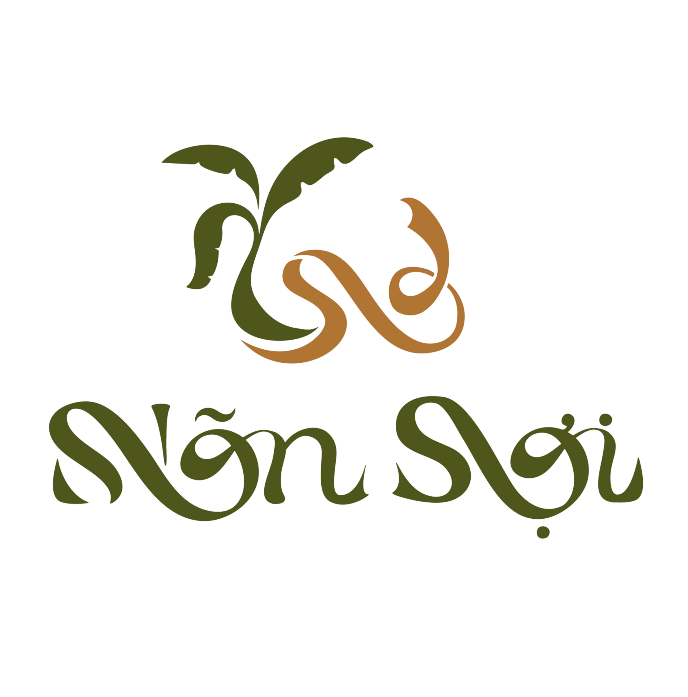

Hành Trình Trong Từng Thớ Sợi
CÂU CHUYỆN BẮT ĐẦU SAU MÙA QUẢ
Khi những buồng chuối được thu hoạch, phần thân còn lại khiến chúng tôi đặt ra một câu hỏi: liệu hành trình của cây chuối có thể tiếp tục? Từ câu hỏi ấy, Nõn Sợi bắt đầu tìm hiểu những dải xơ nằm trong từng lớp bẹ và khả năng đưa nguồn nguyên liệu này vào chất liệu dệt.
Tên gọi “Nõn Sợi” mang theo tinh thần của một khởi đầu mới. “Nõn” gợi sự sinh trưởng và những điều đang mở ra. “Sợi” là thành phần tạo nên tấm vải, đồng thời kết nối nguyên liệu với sản phẩm và người sử dụng.
Nõn Sợi được hình thành từ mong muốn giúp câu chuyện chất liệu trở nên gần gũi hơn. Qua từng hình ảnh, thông tin và thiết kế, chúng tôi mong bạn có thể hiểu thêm về hành trình phía sau chiếc áo mình khoác lên mỗi ngày.
Định hướng thương hiệu
TIẾP NỐI GIÁ TRỊ TỪ NGUYÊN LIỆU QUEN THUỘC
Nõn Sợi hướng đến việc giới thiệu chất liệu từ thân chuối sau thu hoạch và tìm kiếm những ứng dụng phù hợp trong đời sống. Chúng tôi bắt đầu từ việc tìm hiểu nguyên liệu, xem xét đặc điểm của vải và lựa chọn thiết kế có thể thể hiện câu chuyện ấy một cách rõ ràng.
Sứ mệnh: Kết nối người sử dụng với nguồn gốc chất liệu thông qua những sản phẩm có thiết kế giản dị, thông tin dễ hiểu và câu chuyện nhất quán.
Tầm nhìn: Từng bước phát triển Nõn Sợi thành thương hiệu được nhớ đến bởi chất liệu từ thân chuối, sự chỉn chu trong thiết kế và cách truyền đạt trung thực.
Giá trị cốt lõi: Trân trọng nguyên liệu, minh bạch thông tin và quan tâm đến trải nghiệm sử dụng. Đây là những nguyên tắc định hướng cách chúng tôi lựa chọn chất liệu, phát triển sản phẩm và giao tiếp với khách hàng.
Chất liệu và chất lượng sản phẩm
TỪ LỚP BẸ ĐẾN CHIẾC ÁO CHOÀNG
Bên trong các lớp bẹ thân chuối là những dải xơ chạy dọc. Qua các công đoạn tách, tuốt, làm sạch và xử lý, xơ được chuẩn bị cho quá trình tạo sợi. Từ sợi, những lượt đan xen trên khung dệt hình thành tấm vải, mở ra khả năng ứng dụng nguyên liệu vào các sản phẩm thường ngày.
Trong thiết kế của Nõn Sợi, hành trình ấy được tiếp nối bằng mẫu áo choàng màu be. Cổ kimono, tay lỡ, đai buộc và hai túi trước tạo nên một thiết kế giản dị, dành cho những khoảng thời gian nghỉ ngơi.
Chất lượng bắt đầu từ sự phù hợp. Nõn Sợi định hướng lựa chọn vải theo mục đích sử dụng, đồng thời chú trọng bề mặt vải, đường may, phom dáng và các chi tiết hoàn thiện. Việc phát triển sản phẩm cần đi cùng đánh giá mẫu thực tế để thông tin giới thiệu phản ánh đúng trải nghiệm mà chiếc áo mang lại.
Cam kết với khách hàng
SỰ TIN CẬY ĐƯỢC DỆT TỪ NHỮNG ĐIỀU RÕ RÀNG
Với Nõn Sợi, câu chuyện thương hiệu cần đi cùng trách nhiệm trong cách giới thiệu sản phẩm. Chúng tôi lựa chọn xây dựng sự tin cậy từ những thông tin rõ ràng và sự quan tâm đến quá trình sử dụng.
Minh bạch về chất liệu: Cung cấp thông tin thành phần và nguồn gốc dựa trên hồ sơ của nguồn vải được lựa chọn. Những đặc tính giới thiệu cần có căn cứ phù hợp.
Chỉn chu trong sản phẩm: Chú trọng đường may, phom áo và các chi tiết như cổ, túi, đai buộc; lấy sự hoàn thiện của từng mẫu làm cơ sở để tiếp tục cải tiến.
Hướng dẫn chăm sóc rõ ràng: Cung cấp cách giặt và bảo quản phù hợp với chất liệu, giúp người sử dụng chăm sóc chiếc áo trong sinh hoạt hằng ngày.
Lắng nghe trải nghiệm: Đón nhận những góp ý về thiết kế, chất liệu và cách sử dụng để từng bước hoàn thiện sản phẩm.